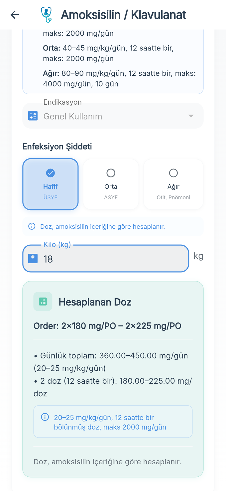

Çocuk hekimleri için ilaç dozu, pediatrik normaller ve klinik skorlar — tek uygulamada
İlacı seç, kiloyu gir; mg/kg dozunu, günlük toplamı ve mL'yi saniyeler içinde gör. Nöbette, aciliyette ve poliklinikte, çevrimdışı ve reklamsız.

Nöbette ihtiyacın olan her şey
Bir pediatri hekimi tarafından, kitaplar ve siteler arasında dolaşmadan hızlı karar vermek için geliştirildi.
Kiloya göre ilaç dozu
130 ilaç, klinikte kullanılan sade endikasyon listeleri; mg/kg, maksimum doz, sıklık, yol ve preparata göre mL. Yenidoğan ve infüzyon şemaları.
Pediatrik normaller
Yaşa göre vital bulgular (PALS), hemogram, tiroid, immünglobulinler, kortizol, ACTH, D vitamini ve puberte hormonları.
13 hesaplayıcı
BSA, QTc (4 formül), Holliday-Segar, HOMA-IR, düzeltilmiş Ca/Na/anyon açığı/K, eGFR (Schwartz, sistatin C, CKiD U25), FENa, FEK, TRP, Kt/V, RPI, IV demir.
8 klinik skor
Brighton PEWS, Apgar, pediatrik GKS, PUCAI, McIsaac, Duke-ISCVID 2023, Phoenix sepsis skoru ve pSOFA — yorumlarıyla birlikte.
Aşı takvimi ve steroidler
Güncel ulusal çocukluk çağı aşı takvimi, özel aşılar ve kortikosteroid eşdeğerlik tablosu.
Çevrimdışı ve gizli
İnternet gerekmez, reklam yok. Girdiğin değerler cihazdan çıkmaz; hesap açman gerekmez. Türkçe ve İngilizce.
Nasıl çalışır?
1. İlacı seç
Listeden ara veya kategoriden bul; endikasyonu seç.
2. Kiloyu gir
Gerekirse boy, yaş veya gestasyonel haftayı ekle.
3. Dozu gör
mg/kg, günlük toplam, doz sayısı, maksimum doz uyarısı ve preparata göre mL.
Sık sorulan sorular
Pediatrik Doz nedir?
Çocuk hekimleri için geliştirilmiş bir mobil uygulamadır: kiloya ve endikasyona göre 130 ilacın dozunu hesaplar; yaşa göre normal değerler, 13 klinik hesaplayıcı, 8 klinik skor, ulusal aşı takvimi ve kortikosteroid eşdeğerliklerini içerir. Çevrimdışı çalışır, reklam içermez.
Ücretsiz mi?
Ücretsiz indirilir. 20 temel ilaç ile temel hesaplayıcı ve skorlar ücretsizdir; diğer içerikler her gün sınırlı sayıda ücretsiz görüntülenebilir. Sınırsız erişim için aylık, 6 aylık veya tek seferlik ömür boyu Premium vardır.
Pediatrik ilaç dozu nasıl hesaplanır?
Çocuklarda doz genellikle vücut ağırlığına göre (mg/kg/doz veya mg/kg/gün) hesaplanır, ilacın maksimum dozunu aşamaz ve günlük toplam uygulama sıklığına bölünür. Uygulama bu hesabı yapar ve seçilen preparata göre mL hacmini gösterir. Sonuç bir yardımcı araçtır; nihai klinik karar hekime aittir.
Veri topluyor mu?
Hayır. Girilen değerler yalnızca cihazda işlenir, sunucuya gönderilmez. Hesap açılmaz; sadece abonelik durumunu doğrulamak için anonim bir kimlik kullanılır. Ayrıntılar gizlilik politikasında.
Kimler kullanabilir?
Sağlık profesyonelleri için tasarlanmıştır. Tıbbi tavsiye veya tıbbi cihaz değildir; hasta ve veliler tarafından tedavi kararı vermek için kullanılamaz.
iOS sürümü ne zaman?
App Store sürümü inceleme aşamasındadır; yayınlandığında bu sayfada ve mağazada duyurulacaktır.